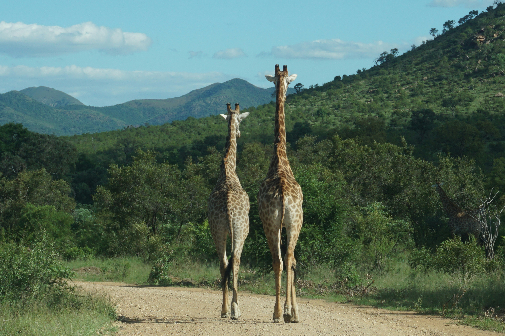
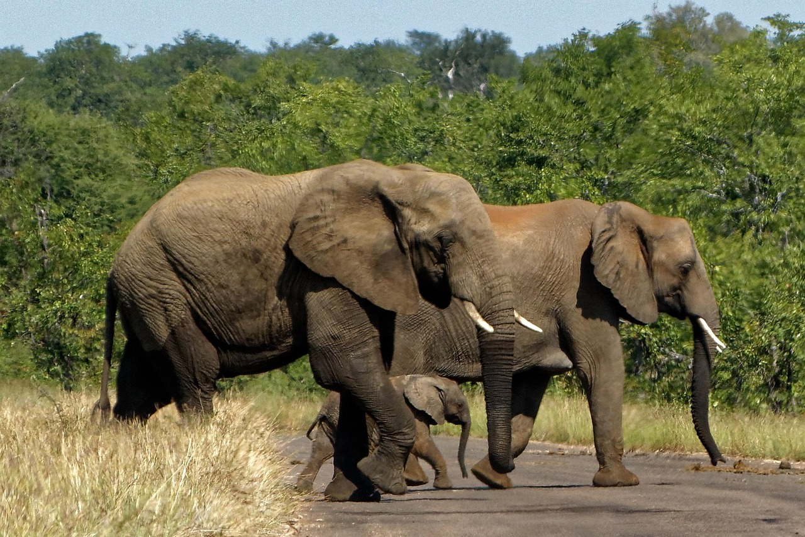
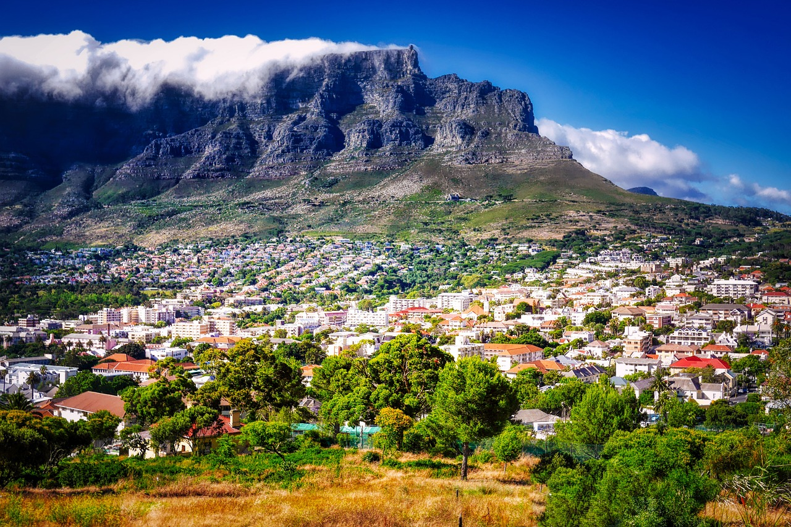
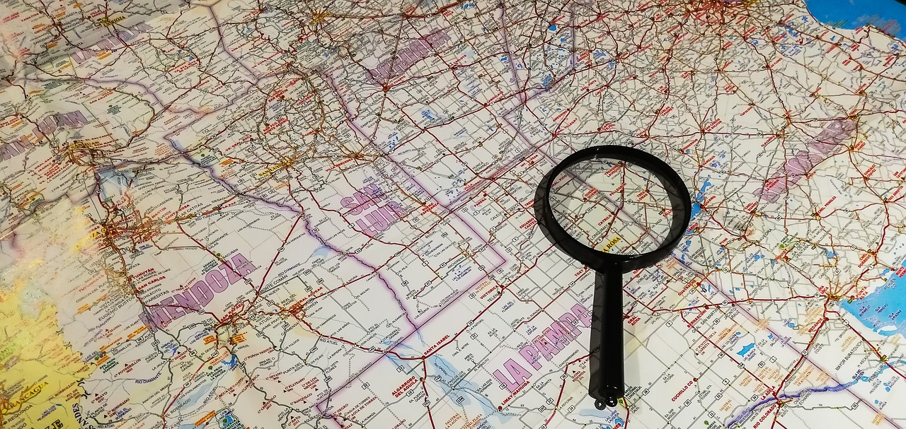
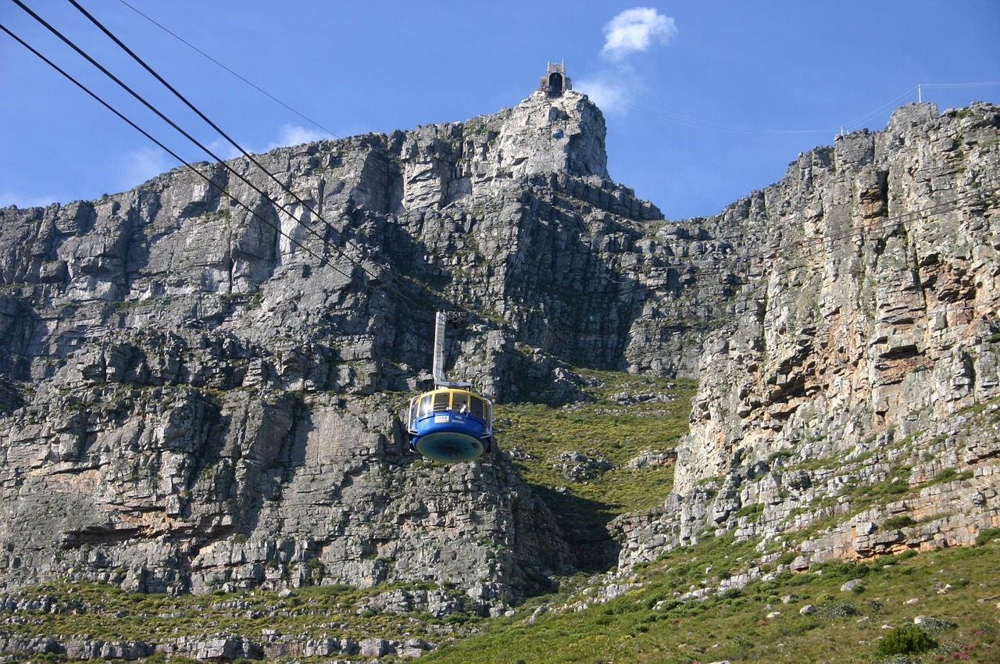
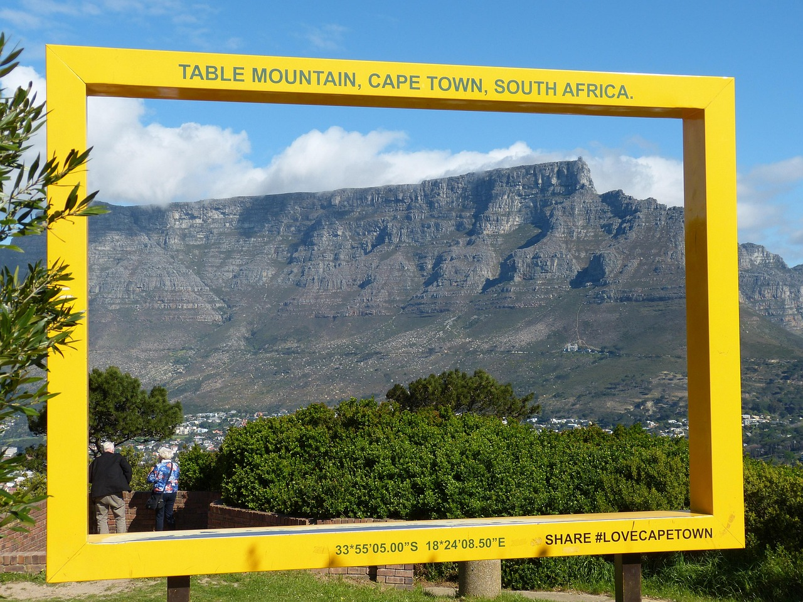
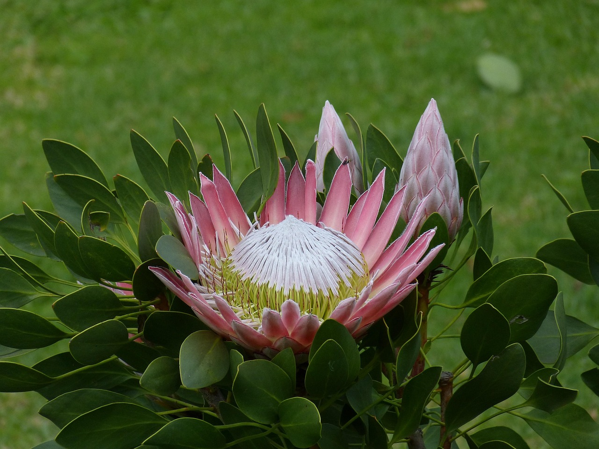
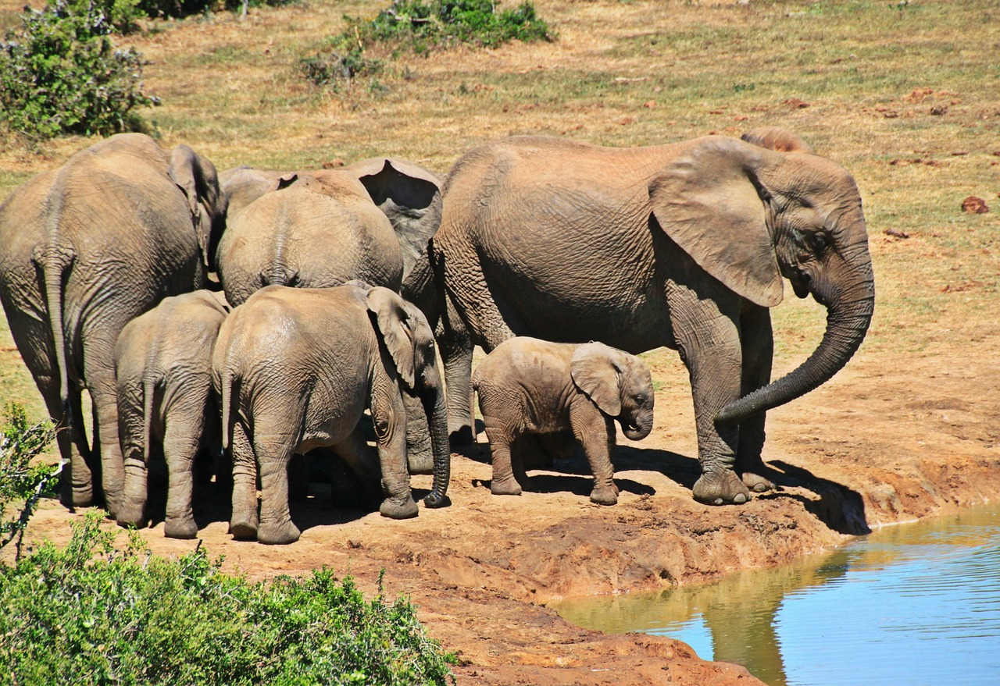
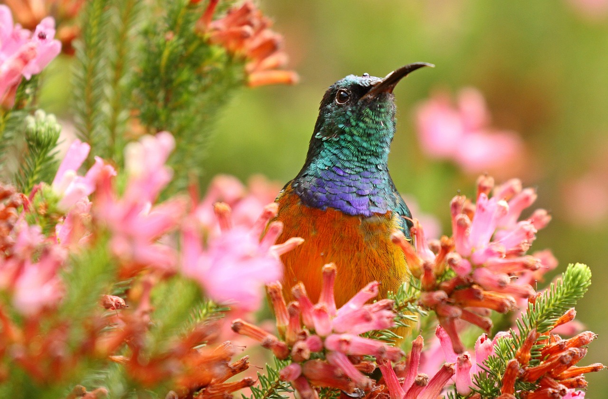
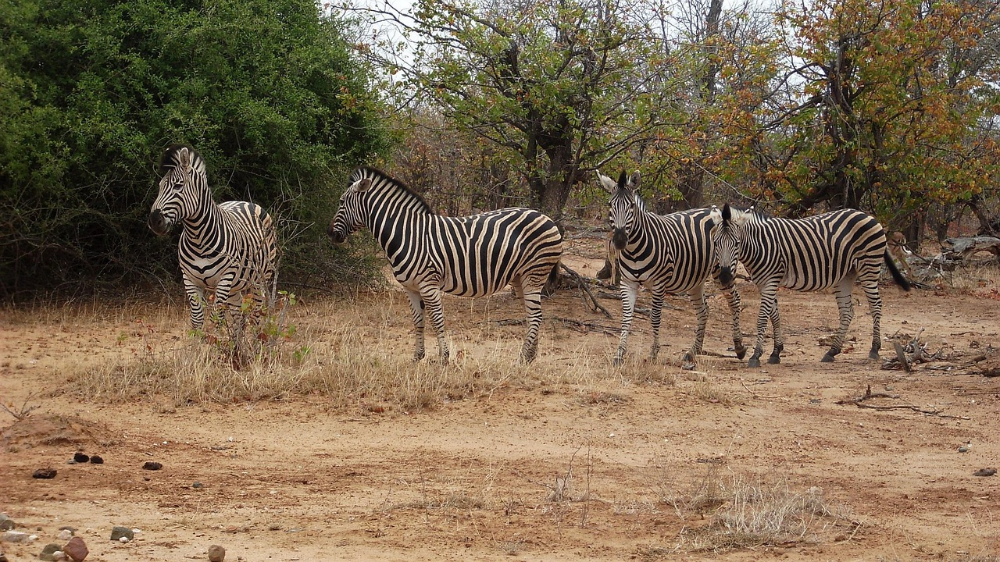

Why visit south-africa ?
Cape Town to Kruger: South Africa Uncovered
From the iconic Table Mountain in Cape Town to the vast savannas of Kruger National Park, South Africa offers an unforgettable journey through diverse landscapes and rich cultures. Visitors can sip world-class wines in the Cape Winelands, explore vibrant city life, and relax along the scenic Garden Route—all in one trip. Whether you're a nature lover, history enthusiast, or adventure seeker, South Africa delivers experiences that are as breathtaking as they are unique.
Kruger National Park, one of Africa’s largest game reserves, brings you face-to-face with the Big Five in their natural habitat, offering thrilling safaris and luxury lodges under starlit skies. Meanwhile, Cape Town dazzles with its blend of modern flair and natural beauty, nestled between mountains and ocean. Traveling across this incredible country uncovers stories of resilience, heritage, and wildlife that will stay with you long after your journey ends.
Sunsets & Safaris
Hidden Gems in South Africa

Kruger National Park
Kruger National Park is South Africa’s premier safari destination, home to the Big Five and a vast range of wildlife.
Learn more
Table Mountain
Table Mountain towers over Cape Town with breathtaking views, hiking trails, and a revolving cable car to the summit.
Learn more
Garden Route
South Africa’s Garden Route is a scenic coastal drive filled with forests, beaches, and charming small towns worth exploring.
Learn moreGallery
Photos from South Africa





